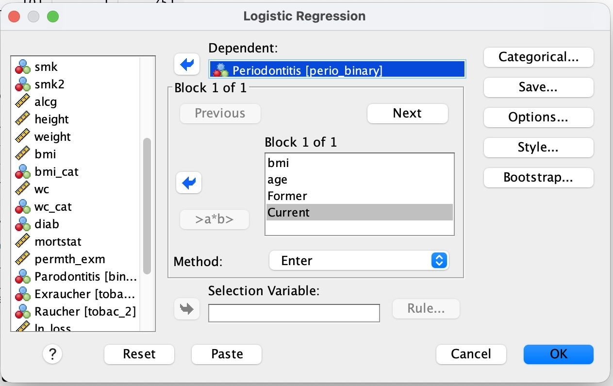
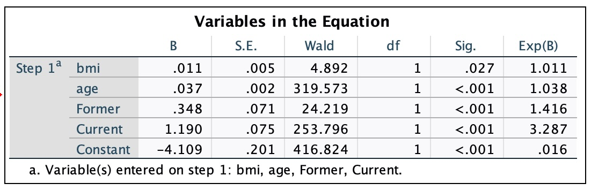
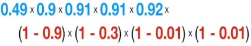
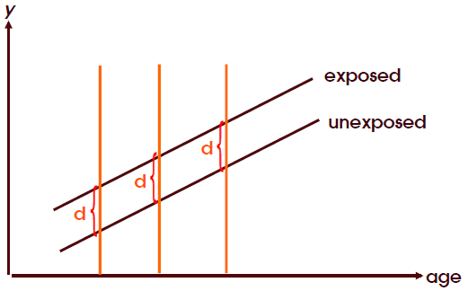

Practical 6: Logistic Regression
Outcome Variable
Also known as: response, predicted, dependent variable
- Type: Binary
- 1 variable
Influencing factor(s)
Also known as: covariate, independent, explanatory, predictor variable
- Type: Continuous or Categorical
- One (Univariable) or Multiple (Multivariable)
Practicum Scenario
In this practical, we use binary logistic regression to study the association between:
- Covariates: BMI (
bmi), age (age), and dummy-coded smoking variables (Former,Current) - Outcome: Periodontitis (
perio_binary)- Values: 0 = No, 1 = Yes
Data Preparation: Creating perio_binary
The binary outcome used throughout this practical is derived from the variable perio (Periodontitis, CDC–AAP definition), which has four levels: 1 = None, 2 = Mild, 3 = Moderate, 4 = Severe.
To use periodontitis as the outcome of a binary logistic regression, we collapse perio into two categories: no periodontitis vs. any periodontitis (mild, moderate, or severe).
SPSS steps
💡 SPSS:
Transform → Recode into Different Variables
Step 2: Select perio >> enter perio_binary under Name and “Periodontitis” under Label >> press Change.

Step 3: Click “Old and New Values…”.
Step 4: Configure the values:
- Under Old Value: enter
1>> Under New Value: enter0>> press Add. - Under Old Value: select Range, enter
2through4>> Under New Value: enter1>> press Add. - Under Old Value: select All other values >> Under New Value: select Copy old value(s) >> press Add. (This handles missing values)
- Press Continue, then OK.

Note: Ensure Measure is Nominal in Variable View, Decimals is set to 0, and set Values to 0 = “No periodontitis” and 1 = “Periodontitis”.
This gives the binary dependent variable perio_binary used in the exercises below (0 = No, 1 = Yes).
Exercise 1: Univariable and Multivariable Logistic Regression
Exercise 1.1 Regression with only bmi as independent variable
Run a logistic regression with only bmi as the independent variable.
💡 SPSS:
Analyze → Regression → Binary Logistic
Step 2: Dependent Variable: perio_binary.
Step 3: Covariates: bmi.

Task results

| Variable | Coefficient B | Sig. | Exp(B) |
|---|---|---|---|
| bmi | −0.001 | 0.751 | 0.999 |
| Constant | −1.367 | <0.001 | 0.255 |
Interpretation:
- The coefficient for
bmiis essentially zero (B = −0.001), and the effect is not statistically significant (p = 0.751) — with onlybmiin the model, BMI shows no association with periodontitis. - Exp(B) = 0.999 means that each 1-unit increase in BMI is associated with a 0.1% decrease in the odds of periodontitis — a negligible effect, consistent with the non-significant p-value.
- The constant’s Exp(B) = 0.255 represents the baseline odds of periodontitis when
bmi= 0; it is not clinically meaningful on its own (a BMI of 0 does not occur), but it is needed to define the model equation.
Exercise 1.2 Interpret the SPSS output
💡 Hint: If you need help, you can find the solution in the cheatsheet at the bottom of this page.
Exercise 1.3 Regression with several independent variables
Add the variables age, bmi, and your dummy-coded smoking variables as independent variables.
Note: If you completed Practical 5, you already have the dummy variables for smoking status. Here they are named Former and Current.

Task results

| Variable | Coefficient B | Sig. | Exp(B) |
|---|---|---|---|
| bmi | 0.049 | 0.007 | 1.050 |
| age | 0.057 | <0.001 | 1.059 |
| Former | 0.352 | <0.001 | 1.421 |
| Current | 1.189 | <0.001 | 3.285 |
| age × bmi | −0.001 | 0.030 | 0.999 |
| Constant | −5.161 | <0.001 | 0.006 |
Note: This output already includes the age × bmi interaction term — you’ll build it explicitly in Exercise 3, where it is interpreted in detail.
In Exercise 1.1, bmi alone was not significantly associated with periodontitis (p = 0.751, Exp(B) ≈ 1). In the multivariable model above, bmi becomes statistically significant (p = 0.007). This happens because age and bmi are correlated with each other and both affect periodontitis risk — adjusting for age removes some of that confounding and reveals the effect of bmi more clearly.
Exercise 2: Model Comparison
Using what you learned in Exercise 1.1, compare whether your new model:
- Is better than the “null model”
- Describes the probability of periodontitis better than your model with only the variable
bmi
Look at the Omnibus Test of Model Coefficients (Chi², df, Sig.) and the pseudo R² values (Cox & Snell, Nagelkerke) of each model — see the cheatsheet below for how to read these.
Task results
| Model | Omnibus χ² (vs. null) | df | Sig. | −2 Log likelihood | Cox & Snell R² | Nagelkerke R² |
|---|---|---|---|---|---|---|
bmi only (Exercise 1.1) |
0.101 | 1 | 0.751 | 7784.274 | 0.000 | 0.000 |
bmi + age + Former + Current (Exercise 1.3) |
509.947 | 4 | <0.001 | 7258.779 | 0.063 | 0.100 |
1. Is the new model better than the “null model”?
Yes. The Omnibus Test for the multivariable model is highly significant (χ²(4) = 509.947, p < .001) — adding bmi, age, Former, and Current explains periodontitis status significantly better than the null model (intercept only). The univariable bmi-only model, by contrast, was not significantly better than the null model (χ²(1) = 0.101, p = .751) — bmi alone adds essentially nothing.
2. Does it describe the probability of periodontitis better than the model with only bmi?
Yes, clearly. Since the bmi-only model is nested inside the multivariable model, we can compare them with a likelihood-ratio test: the difference in −2 Log likelihood is 7784.274 − 7258.779 = 525.495, with 4 − 1 = 3 additional degrees of freedom (age, Former, Current). This is far larger than the critical χ² value for df = 3 (7.815 at α = .05), so the multivariable model fits significantly better. This also shows in the pseudo-R²: Nagelkerke R² rises from .000 (bmi only) to .100 (multivariable) — the model explains much more of the variation in periodontitis once age and smoking status are added.
Note: The two models are estimated on slightly different sample sizes (7858 vs. 7848 cases) due to missing values on age/smoking — a minor caveat for the likelihood-ratio comparison, but it does not change the conclusion given how large the difference is.
Exercise 3: Regression with an Interaction Term
Run the regression with an additional interaction term.
To add an interaction term, click age, hold down the CTRL key, and also click bmi. Then click the “>a*b>” icon.

Task results

| Variable | Coefficient B | Sig. | Exp(B) |
|---|---|---|---|
| bmi | 0.049 | 0.007 | 1.050 |
| age | 0.058 | <0.001 | 1.059 |
| former_smk | 0.347 | <0.001 | 1.415 |
| current_smk | 1.186 | <0.001 | 3.274 |
| age × bmi | −0.001 | 0.029 | 0.999 |
| Constant | −5.165 | <0.001 | 0.006 |
Questions:
Would you classify the effect as tiny?
In which direction does the effect modification act (in other words: does the overweight of an older patient affect the odds of periodontitis the same way as a higher BMI of a young patient)?
Task results
The interaction term
age × bmiis statistically significant (p = 0.029), but its Exp(B) is 0.999 — extremely close to 1. So the size of the effect modification is tiny, even though it is statistically detectable (which is common with large samples).The coefficient is negative (B = −0.001), meaning the effect of
bmion the odds of periodontitis becomes slightly weaker asageincreases. So no — the same increase in BMI is associated with a somewhat larger increase in the odds of periodontitis in a young patient than in an older patient. Age slightly attenuates the effect of BMI.
Cheatsheet – Logistic Regression
Show cheatsheet
Introduction
(Binary) logistic regression is used when we want to study the relationship between a binary dependent variable and one or more independent variables.
Unlike linear regression, the dependent variable here is binary (heart attack: yes or no, tooth present: yes or no). The independent variables, on the other hand, are at least interval-scaled or coded as dummy variables.
Binary logistic regression analyzes the relationship between the probability that the dependent variable takes the value 1 and the independent variables. So the model does not predict the value of the dependent variable directly, but rather the probability that it takes the value 1.
Assumptions
The assumptions are less restrictive than for linear regression:
- The dependent variable is binary (coded 0 / 1)
- The independent variables are metric or, for categorical variables, coded as dummy variables
- The groups of categorical predictors are sufficiently large
- The independent variables are not highly correlated with each other (multicollinearity)
Unlike linear regression, the method used is not “least-squares” but the “maximum likelihood” method.
Visualization (S-curve)
Highly simplified illustration (blue = observed 1, red = observed 0):

We use the observed values to compute the predicted probabilities of our S-curve. Blue (= 1) should be predicted by our model with as high a probability as possible. Our model predicts the probability of 1; the probability of red (= not 1) is accordingly (1 − probability of blue). Here too, the model should predict as precisely as possible whether 1 does not occur. The maximum likelihood is computed from the individual probabilities:

SPSS runs these calculations repeatedly using an algorithm and chooses the S-curve with the highest likelihood.
Interpreting the regression coefficients
The regression coefficients of a logistic regression can no longer be interpreted in the same way as in linear regression. However, the sign can still be interpreted: a positive regression coefficient means that an increase in the independent variable is associated with an increase in the probability that the dependent variable = 1.
For a more precise interpretation, we use the “Odds Ratio”. SPSS labels the odds ratio of a variable “Exp(B)”:

A value of 1 here means no change in relative probability.

Interpreting the SPSS output (Exercise 1.2)
First, SPSS produces a “Case Processing Summary”. Here you can check how many cases were processed or excluded.
Under “Block 0: Beginning Block”, SPSS creates a model without the variable bmi; instead, only the mode (the most frequent value) is used for the estimate. This model only serves as a point of comparison and can be ignored for now.
Under “Block 1: Method = Enter” you will find the following table:
Omnibus Tests of Model Coefficients
| Chi-square | df | Sig. | |
|---|---|---|---|
| Step 1 – Step | 426.935 | 1 | < .001 |
| Block | 426.935 | 1 | < .001 |
| Model | 426.935 | 1 | < .001 |
The Omnibus test is a Chi² test that compares the “explanatory power” of the model you formulated (with bmi) to the “null model” from Block 0. You can ignore “Step” and “Block” here. If Sig. is below 0.05, the new model differs significantly from the “null model”.
Under “Model Summary” you will find information about the model fit. For logistic regression, analogues to the R² of linear regression are used for this purpose. There is a large number of different such pseudo-R² measures; two of them are implemented in SPSS: the Cox and Snell R² and the Nagelkerke R².
The “Classification Table” shows the predicted probabilities against the observed values: SPSS uses a probability of 50% as the cutoff to decide whether the observed subject has a predicted periodontitis (y = 1). This threshold can be changed. The result can be read from the table.
Under “Variables in the Equation” you will find the variables with their corresponding coefficients — see the example above.
Interaction terms and effect modification
So far, we have assumed that the underlying effect of our (primary) predictor is the same across the levels of the individual covariates. This is not always the case, however.
With effect modification, the association between risk factor and outcome is not constant across the different levels of the covariate — i.e., the covariate changes the effect of the risk factor.
Graphically: if the relationship between risk factor and outcome remains unchanged across different levels of the covariate, there is no effect modification.

If an interaction is present, the association between the risk factor and the outcome variable is not constant across the different levels of the covariate.

To determine whether the covariate is an effect modifier, you build a model with an interaction term (“variable a” × “variable b”). The variable is only considered an effect modifier if:
- The interaction is biologically plausible
- The interaction term is statistically significant